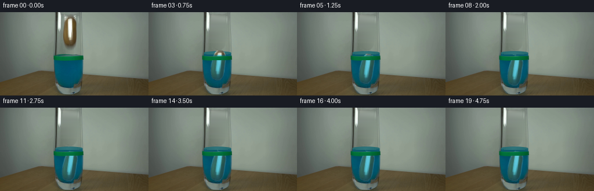
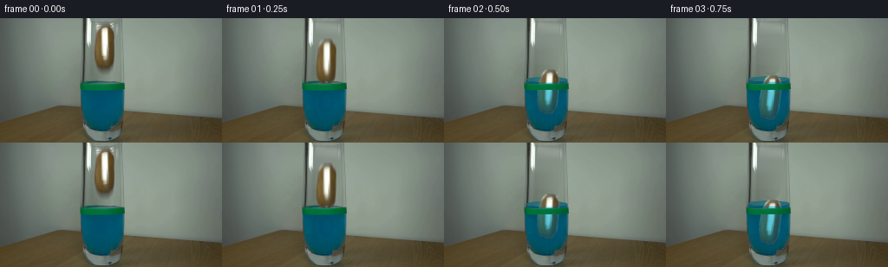

CODING AGENTS AS PIXEL WORLD MODELS
traex/GPT-6.1-Sol · 0144
点击播放 · 原生 RGB 像素
逐轮保存的候选
回放视频、检查图与代码变化。
每份候选均可单独播放。实际图片检查记录在下方工具轨迹中。
候选 01播放与检查图
点击播放 · 原生 RGB 像素


展开代码变化
--- 上一保存版本
+++ 本次保存版本
@@ -0,0 +1,220 @@
+from pathlib import Path
+import math
+import numpy as np
+from PIL import Image, ImageDraw
+import cv2
+from scipy.ndimage import gaussian_filter, map_coordinates
+import artifact_io
+
+ROOT=Path(__file__).resolve().parent
+SOURCE=np.asarray(Image.open(ROOT/'first_frame.png').convert('RGB'),dtype=np.uint8)
+H,W=144,256
+Y,X=np.mgrid[:H,:W].astype(np.float32)
+
+def polygon_mask(points, scale=4):
+ im=Image.new('L',(W*scale,H*scale))
+ ImageDraw.Draw(im).polygon([(round(x*scale),round(y*scale)) for x,y in points],fill=255)
+ return np.asarray(im.resize((W,H),Image.Resampling.LANCZOS),dtype=np.float32)/255
+
+# Outline traced numerically from the brown skin, its overexposed highlight,
+# and the soft optical boundary in the supplied photograph.
+outline=[(116,7.2),(123,7),(127,8.3),(130,11.8),(131.5,16),
+ (132.1,22),(132,43.5),(131.5,48.5),(130.5,53),
+ (128.5,56.5),(126.5,58.2),(122.5,59.5),(118.5,59.3),
+ (114.5,57.5),(111.8,54.7),(110,50),(108.7,44),
+ (108.6,33),(109.3,24),(110.5,17),(112.4,12),(114.5,9.6)]
+ALPHA=polygon_mask(outline)
+ALPHA=gaussian_filter(ALPHA,.28)
+
+# Reconstruct the empty transparent upper part of the vessel, retaining the
+# original vessel's two edges and the fixed background and tabletop.
+left=gaussian_filter(SOURCE[:,105].astype(np.float32),(.9,0))
+right=gaussian_filter(SOURCE[:,135].astype(np.float32),(.9,0))
+f=np.clip((X-105)/30,0,1)
+wall=left[:,None,:]*(1-f[:,:,None])+right[:,None,:]*f[:,:,None]
+clean_outline=[(108,4),(133,4),(133.5,49),(132.3,57),(128.5,63),
+ (121,65),(113,63),(108,57),(106.8,40),(107.5,20)]
+cleanmask=gaussian_filter(polygon_mask(clean_outline),.7)
+BASE=SOURCE.astype(np.float32)*(1-cleanmask[:,:,None])+wall*cleanmask[:,:,None]
+# Alpha's boundary colors are unmixed from their original wall contribution.
+TEX=SOURCE.astype(np.float32).copy()
+TEX=(TEX-wall*(1-ALPHA[:,:,None]))/np.maximum(ALPHA[:,:,None],.08)
+TEX=np.clip(TEX,0,255)
+TEX[ALPHA<.025]=wall[ALPHA<.025]
+
+# Slightly extend glass-edge lighting as the level rises; the outside green
+# level marker itself is never translated.
+CX,CY=120.1,33.25
+# The body is an ellipsoid. Integrate gravity, partial buoyancy and fluid drag.
+def dynamics():
+ dt=.001
+ t=0.; d=0.; v=0.
+ states=[]
+ for i in range(5001):
+ q=np.clip((74.9-(CY+d))/25.7,-1,1)
+ submerged=float(.5-.75*q+.25*q*q*q)
+ rise=6.1*submerged
+ q=np.clip((74.9-rise-(CY+d))/25.7,-1,1)
+ submerged=float(.5-.75*q+.25*q*q*q)
+ states.append((d,v,submerged,6.1*submerged))
+ if t>.075:
+ a=1100*(1-.922*submerged)-submerged*(6.4*v+.12*v*abs(v))
+ v+=a*dt
+ d+=v*dt
+ if d>68.0:
+ d=68.0
+ if v>0:v=-v*.10
+ if abs(v)<.12:v=0.
+ t+=dt
+ return np.asarray(states)
+STATES=dynamics()
+
+
+def surface_geometry(rise,t):
+ # Elliptical water surface viewed from just above the cylinder.
+ decay=math.exp(-max(t-.28,0)*2.0)
+ wiggle=(1.1*math.sin(13.0*t))*decay if t>.15 else 0.
+ center=76.1-rise
+ xn=(X-118.2)/24.0
+ half=3.0*np.sqrt(np.maximum(0,1-xn*xn))
+ front=center+half + wiggle*np.cos((X-118)*.22)
+ back=center-half + .6*wiggle*np.cos((X-118)*.24)
+ inside=(np.abs(xn)<1)&(X>94)&(X<142.8)
+ return front,back,inside,center,half
+
+
+def render(t):
+ idx=min(5000,round(t*1000))
+ d,v,sub,rise=STATES[idx]
+ # Very slight inertial tilt as the free potato encounters fluid resistance.
+ if t<.3:angle=0.03*(t/.3)**2
+ elif t<1.3:angle=.03+.14*(1-math.exp(-(t-.3)*2.2))
+ else:angle=.155+.04*math.exp(-3*(t-1.3))*math.sin((t-1.3)*10)
+ # Its narrow lower end rests over the rounded inside bottom of the glass.
+ dx=-.5*(1-math.exp(-t*3))
+ if d>67.5:
+ d=68.0-.45*math.exp(-max(t-1.3,0)*4)*abs(math.sin(max(t-1.3,0)*9))
+ c,s=math.cos(angle),math.sin(angle)
+ nx=X-(CX+dx); ny=Y-(CY+d)
+ sx=(c*nx+s*ny+CX).astype(np.float32)
+ sy=(-s*nx+c*ny+CY).astype(np.float32)
+ tex=cv2.remap(TEX,sx,sy,cv2.INTER_LINEAR,borderMode=cv2.BORDER_CONSTANT)
+ alpha=cv2.remap(ALPHA,sx,sy,cv2.INTER_LINEAR,borderMode=cv2.BORDER_CONSTANT)
+ out=BASE.copy()
+
+ front,back,inside,surfcenter,half=surface_geometry(rise,t)
+ # Water volume occupies the same glass. Expansion upward is visible above
+ # the marker, rather than moving the marker with the free water surface.
+ waterzone=inside&(Y<76)&(Y>back-1.0)
+ coverage=np.clip(Y-back+.65,0,1)*waterzone
+ depth=np.clip((Y-back)/7,0,1)
+ watercolor=np.zeros((H,W,3),np.float32)
+ side=.10+.10*np.maximum(0,(X-118)/24)
+ watercolor[:,:,0]=8+12*(1-depth)+side*12
+ watercolor[:,:,1]=86+12*(1-depth)+side*12
+ watercolor[:,:,2]=104+9*(1-depth)+side*10
+ surf=(Y<front)&(Y>back)&inside
+ surface_col=np.zeros_like(watercolor)
+ surface_col[:]=[42,111,117]
+ surface_col += (4*np.cos((X-118)*.15))[:,:,None]
+ watercolor[surf]=surface_col[surf]
+ # Conservatively blend the existing surface for the first few millimetres.
+ coverage*=min(1,rise/1.1)
+ out=out*(1-coverage[:,:,None])+watercolor*coverage[:,:,None]
+
+ # Refraction and absorption affect the submerged portion continuously at
+ # the waterline, but leave the dry brown skin's original photograph intact.
+ wet=np.clip((Y-front+.4)/1.5,0,1)
+ refract=wet*.32*np.sin((Y-front)*.3)*math.exp(-t*1.6)
+ wet_sx=(sx+refract).astype(np.float32)
+ tex2=cv2.remap(TEX,wet_sx,sy,cv2.INTER_LINEAR,borderMode=cv2.BORDER_CONSTANT)
+ depth2=np.maximum(Y-front,0)
+ trans=np.stack([.46*np.exp(-depth2*.004),
+ .79*np.exp(-depth2*.0015),
+ .80*np.exp(-depth2*.0008)],axis=-1)
+ # The dyed blue liquid is translucent, not an opaque paint layer.
+ diffuse=tex2*trans + np.array([1.,32.,55.],np.float32)
+ # The strong camera-facing glint becomes subdued blue-green underwater.
+ luminance=tex2.mean(axis=2)
+ white=np.clip((luminance-165)/85,0,1)
+ diffuse-=white[:,:,None]*np.array([15,29,33],np.float32)
+ tex=tex*(1-wet[:,:,None])+diffuse*wet[:,:,None]
+ # Keep the body inside the curved lower wall; cylinder bottom is rounded.
+ floor=127.5-0.021*(X-119)**2
+ clip=np.clip((floor-Y+1.0),0,1)
+ alpha*=clip
+ out=out*(1-alpha[:,:,None])+tex*alpha[:,:,None]
+
+ # The fixed green tape/band, along with edge highlights, is in front of
+ # the contents. It remains in exactly the original position.
+ tape=(Y>=76)&(Y<=82)&(X>=92)&(X<=143)
+ tape_strength=np.clip((SOURCE[:,:,1].astype(float)-SOURCE[:,:,2].astype(float)-5)/25,0,1)*tape
+ out=out*(1-tape_strength[:,:,None])+SOURCE*tape_strength[:,:,None]
+ rim=np.clip((95.8-X)/1.5,0,1)+np.clip((X-141.4)/1.2,0,1)
+ rim=np.clip(rim,0,1)*(Y>=65)*(Y<127)
+ out=out*(1-rim[:,:,None])+SOURCE*rim[:,:,None]
+
+ # Low, restrained water response to entry: ring waves, a few droplets,
+ # and short-lived bubbles, all confined to the existing setup.
+ event=.23
+ age=t-event
+ if age>0:
+ amp=math.exp(-age*2.5)
+ rings=np.zeros((H,W),np.float32)
+ for j in range(3):
+ a=age-j*.12
+ if a<0:continue
+ rx=min(23,5+30*a)
+ ry=rx*.125
+ yy=surfcenter+.25*math.sin(11*t)
+ r=np.sqrt(((X-119.8)/rx)**2+((Y-yy)/max(ry,.8))**2)
+ ring=np.exp(-((r-1)/.075)**2)*amp*(.65-j*.12)
+ rings=np.maximum(rings,ring)
+ rings*=inside*(Y<76)*(Y>back-.5)
+ out=out*(1-rings[:,:,None]*.28)+np.array([89,145,148])*rings[:,:,None]*.28
+ # Submerged turbulence bends the blue illumination locally and fades.
+ rr=np.sqrt(((X-120)/18)**2+((Y-96)/29)**2)
+ disturbance=np.sin(rr*13-age*10)*np.exp(-rr**2*1.5)*amp
+ fluid=(Y>83)&(Y<123)&(X>96)&(X<140)
+ out+=disturbance[:,:,None]*np.array([0.,2.3,3.0])*fluid[:,:,None]
+ if age<.5:
+ for k,(vx,vy) in enumerate([(-21,-38),(15,-46),(29,-25),(-10,-51)]):
+ px=120+vx*age
+ py=74.3-rise+vy*age+110*age*age
+ rad=.55 if k%2 else .75
+ m=np.exp(-((X-px)**2+(Y-py)**2)/(2*rad*rad))
+ m*=inside*(Y<76)
+ opacity=.65*(1-age/.55)
+ out=out*(1-m[:,:,None]*opacity)+np.array([63,132,139])*m[:,:,None]*opacity
+ if .3<t<1.65:
+ for k in range(4):
+ ba=t-.28-k*.12
+ if not 0<ba<1.0:continue
+ bx=111+6*k+math.sin(ba*11+k)*1.1
+ by=104-33*ba
+ if by<surfcenter+4:continue
+ rad=.65+.13*(k%2)
+ r=np.sqrt((X-bx)**2+(Y-by)**2)
+ m=np.exp(-((r-rad)/.28)**2)*.23*math.exp(-ba*1.5)
+ m*=fluid*(1-alpha*.8)
+ out=out*(1-m[:,:,None])+np.array([103,167,171])*m[:,:,None]
+ return np.uint8(np.clip(out,0,255).round())
+
+
+def main():
+ frames=[SOURCE.copy()]
+ # A 1/100 s photographic shutter at an exact fixed 4 Hz frame rate.
+ for n in range(1,20):
+ t=n/4
+ if t<1.1:
+ samples=[render(t+offset) for offset in [-.008,0,.008]]
+ f=np.uint8(np.mean(samples,axis=0).round())
+ else:f=render(t)
+ frames.append(f)
+ frames=np.stack(frames)
+ artifact_io.save(frames,ROOT)
+ np.save(ROOT/'.tmp'/'dynamics.npy',STATES)
+ Image.fromarray(np.uint8(np.clip(BASE,0,255))).save(ROOT/'.tmp'/'empty.png')
+ Image.fromarray(np.uint8(ALPHA*255)).save(ROOT/'.tmp'/'potato_alpha.png')
+
+if __name__=='__main__':main()
可观测工具轨迹
实际执行的命令与返回图片。
命令 1exit 0
/bin/bash -lc 'ls -la; cat prompt.txt; cat GENERATION_RULES.md'
命令 2exit 0
/bin/bash -lc "cat artifact_io.py; python - <<'PY'
from PIL import Image
import numpy as np
im=np.array(Image.open('first_frame.png').convert('RGB'));print(im.shape)
# downsample representative pixels coarse color map
small=np.array(Image.fromarray(im).resize((85,48)))
for row in small:
s=''
for r,g,b in row.astype(int):
if max(r,g,b)-min(r,g,b)<20:
s+= ' ' if r>225 else '.' if r>180 else ':' if r>120 else '+' if r>70 else '#' if r>30 else '@'
elif b>r*1.25 and b>g*1.05:s+='B' if b>110 else 'b'
elif g>r*1.15 and g>b*1.1:s+='G'
elif r>b*1.3 and g>b*1.1:s+='O' if r>130 else 'o'
elif r>g*1.25:s+='R'
else:s+='~'
print(s)
PY"命令 3exit 0
/bin/bash -lc "python - <<'PY'
from PIL import Image
import numpy as np
im=np.array(Image.open('first_frame.png'))
for y in range(0,144,4):
print('y',y, ' '.join(f'{x}:{tuple(im[y,x,:3])}' for x in [85,90,94,97,100,104,108,112,116,120,124,128,132,136,140,144,148]))
PY"命令 4exit 0
/bin/bash -lc "python - <<'PY'
from PIL import Image
import numpy as np
im=np.array(Image.open('first_frame.png')).astype(int)
print(' '+''.join(str(x//10%10) for x in range(90,137)))
print(' '+''.join(str(x%10) for x in range(90,137)))
for y in range(0,79):
s=''
for x in range(90,137):
r,g,b=im[y,x,:3]
if r-b>18 and r-g>5:
s+='A' if r>180 else 'P' if r>100 else 'p'
elif r>235 and g>235:s+='W'
elif r>175 and g>175:s+='w'
elif max(r,g,b)<80:s+='#'
elif b-r>20:s+='B'
elif g-r>24 and g-b>20:s+='G'
else:s+='.'
print(f'{y:3d} '+s)
PY"命令 5exit 0
/bin/bash -lc "python - <<'PY'
import numpy as np
from PIL import Image
A=np.array(Image.open('first_frame.png')).astype(int)
print('GRAY')
chars='@%#*+=-:. '
for y in range(0,84):
print(f'{y:02} '+''.join(chars[min(9,int(A[y,x,:3].mean())//26)] for x in range(80,158)))
print('RGB TOP')
for y in range(0,15,2):
print(y, [(x,tuple(map(int,A[y,x,:3]))) for x in range(106,143)])
PY"命令 6exit 0
/bin/bash -lc "python - <<'PY'
import numpy as np
from PIL import Image
from scipy.cluster.vq import kmeans2
im=np.array(Image.open('first_frame.png')).astype(float)
a=im[:75,90:144].reshape(-1,3)
c,l=kmeans2(a,18,minit='++',seed=3)
for i,rgb in enumerate(c):print(chr(65+i),np.round(rgb).astype(int))
lab=l.reshape(75,54)
for y,r in enumerate(lab):print(f'{y:02} '+''.join(chr(65+q) for q in r))
PY"命令 7exit 0
/bin/bash -lc "python - <<'PY'
from PIL import Image
import numpy as np
A=np.array(Image.open('first_frame.png')).astype(int)
for y in [0,10,30,50,65,72,73,74,75,76,77,80,82,100,125,130,135,140,143]:
print(y,':', ' '.join(f'{x}: {A[y,x,0]},{A[y,x,1]},{A[y,x,2]}' for x in range(90,146,2)))
PY"命令 8exit 0
/bin/bash -lc "python - <<'PY'
import numpy as np
from PIL import Image
A=np.array(Image.open('first_frame.png'))
# print high-resolution luminance from upper part as numeric structure
for y in [0,2,4,6,8,10,12,14,16,25,40,55,60,65]:
print(y,[(x,tuple(map(int,A[y,x,:3]))) for x in range(106,133,1)])
PY"命令 9exit 0
/bin/bash -lc "python - <<'PY'
import numpy as np
from PIL import Image
A=np.array(Image.open('first_frame.png')).astype(float)
for y in range(3,65):
q=A[y,106:134]; idx=np.where((q[:,0]-q[:,2]>18)&(q[:,0]-q[:,1]>4))[0]+106
if len(idx):print(y,idx[0],idx[-1])
PY"命令 10exit 0
/bin/bash -lc "python - <<'PY'
import cv2,scipy
print('cv',cv2.__version__)
PY"命令 11exit 1
/bin/bash -lc "cat > generate.py <<'PY'
from pathlib import Path
import math
import numpy as np
from PIL import Image, ImageDraw
import cv2
from scipy.ndimage import gaussian_filter, map_coordinates
import artifact_io
ROOT=Path(__file__).resolve().parent
SOURCE=np.asarray(Image.open(ROOT/'first_frame.png').convert('RGB'),dtype=np.uint8)
H,W=144,256
Y,X=np.mgrid[:H,:W].astype(np.float32)
def polygon_mask(points, scale=4):
im=Image.new('L',(W*scale,H*scale))
ImageDraw.Draw(im).polygon([(round(x*scale),round(y*scale)) for x,y in points],fill=255)
return np.asarray(im.resize((W,H),Image.Resampling.LANCZOS),dtype=np.float32)/255
# Outline traced numerically from the brown skin, its overexposed highlight,
# and the soft optical boundary in the supplied photograph.
outline=[(116,7.2),(123,7),(127,8.3),(130,11.8),(131.5,16),
(132.1,22),(132,43.5),(131.5,48.5),(130.5,53),
(128.5,56.5),(126.5,58.2),(122.5,59.5),(118.5,59.3),
(114.5,57.5),(111.8,54.7),(110,50),(108.7,44),
(108.6,33),(109.3,24),(110.5,17),(112.4,12),(114.5,9.6)]
ALPHA=polygon_mask(outline)
ALPHA=gaussian_filter(ALPHA,.28)
# Reconstruct the empty transparent upper part of the vessel, retaining the
# original vessel's two edges and the fixed background and tabletop.
left=gaussian_filter(SOURCE[:,105].astype(np.float32),(.9,0))
right=gaussian_filter(SOURCE[:,135].astype(np.float32),(.9,0))
f=np.clip((X-105)/30,0,1)
wall=left[:,None,:]*(1-f[:,:,None])+right[:,None,:]*f[:,:,None]
clean_outline=[(108,4),(133,4),(133.5,49),(132.3,57),(128.5,63),
(121,65),(113,63),(108,57),(106.8,40),(107.5,20)]
cleanmask=gaussian_filter(polygon_mask(clean_outline),.7)
BASE=SOURCE.astype(np.float32)*(1-cleanmask[:,:,None])+wall*cleanmask[:,:,None]
# Alpha's boundary colors are unmixed from their original wall contribution.
TEX=SOURCE.astype(np.float32).copy()
TEX=(TEX-wall*(1-ALPHA[:,:,None]))/np.maximum(ALPHA[:,:,None],.08)
TEX=np.clip(TEX,0,255)
TEX[ALPHA<.025]=wall[ALPHA<.025]
# Slightly extend glass-edge lighting as the level rises; the outside green
# level marker itself is never translated.
CX,CY=120.1,33.25
# The body is an ellipsoid. Integrate gravity, partial buoyancy and fluid drag.
def dynamics():
dt=.001
t=0.; d=0.; v=0.
states=[]
for i in range(5001):
q=np.clip((74.9-(CY+d))/25.7,-1,1)
submerged=float(.5-.75*q+.25*q*q*q)
rise=6.1*submerged
q=np.clip((74.9-rise-(CY+d))/25.7,-1,1)
submerged=float(.5-.75*q+.25*q*q*q)
states.append((d,v,submerged,6.1*submerged))
if t>.075:
a=1100*(1-.922*submerged)-submerged*(6.4*v+.12*v*abs(v))
v+=a*dt
d+=v*dt
if d>68.0:
d=68.0
if v>0:v=-v*.10
if abs(v)<.12:v=0.
t+=dt
return np.asarray(states)
STATES=dynamics()
def surface_geometry(rise,t):
# Elliptical water surface viewed from just above the cylinder.
decay=math.exp(-max(t-.28,0)*2.0)
wiggle=(1.1*math.sin(13.0*t))*decay if t>.15 else 0.
center=76.1-rise
xn=(X-118.2)/24.0
half=3.0*np.sqrt(np.maximum(0,1-xn*xn))
front=center+half + wiggle*np.cos((X-118)*.22)
back=center-half + .6*wiggle*np.cos((X-118)*.24)
inside=(np.abs(xn)<1)&(X>94)&(X<142.8)
return front,back,inside,center,half
def render(t):
idx=min(5000,round(t*1000))
d,v,sub,rise=STATES[idx]
# Very slight inertial tilt as the free potato encounters fluid resistance.
if t<.3:angle=0.03*(t/.3)**2
elif t<1.3:angle=.03+.14*(1-math.exp(-(t-.3)*2.2))
else:angle=.155+.04*math.exp(-3*(t-1.3))*math.sin((t-1.3)*10)
# Its narrow lower end rests over the rounded inside bottom of the glass.
dx=-.5*(1-math.exp(-t*3))
if d>67.5:
d=68.0-.45*math.exp(-max(t-1.3,0)*4)*abs(math.sin(max(t-1.3,0)*9))
c,s=math.cos(angle),math.sin(angle)
nx=X-(CX+dx); ny=Y-(CY+d)
sx=c*nx+s*ny+CX
sy=-s*nx+c*ny+CY
tex=cv2.remap(TEX,sx,sy,cv2.INTER_LINEAR,borderMode=cv2.BORDER_CONSTANT)
alpha=cv2.remap(ALPHA,sx,sy,cv2.INTER_LINEAR,borderMode=cv2.BORDER_CONSTANT)
out=BASE.copy()
front,back,inside,surfcenter,half=surface_geometry(rise,t)
# Water volume occupies the same glass. Expansion upward is visible above
# the marker, rather than moving the marker with the free water surface.
waterzone=inside&(Y<76)&(Y>back-1.0)
coverage=np.clip(Y-back+.65,0,1)*waterzone
depth=np.clip((Y-back)/7,0,1)
watercolor=np.zeros((H,W,3),np.float32)
side=.10+.10*np.maximum(0,(X-118)/24)
watercolor[:,:,0]=8+12*(1-depth)+side*12
watercolor[:,:,1]=86+12*(1-depth)+side*12
watercolor[:,:,2]=104+9*(1-depth)+side*10
surf=(Y<front)&(Y>back)&inside
surface_col=np.zeros_like(watercolor)
surface_col[:]=[42,111,117]
surface_col += (4*np.cos((X-118)*.15))[:,:,None]
watercolor[surf]=surface_col[surf]
# Conservatively blend the existing surface for the first few millimetres.
coverage*=min(1,rise/1.1)
out=out*(1-coverage[:,:,None])+watercolor*coverage[:,:,None]
# Refraction and absorption affect the submerged portion continuously at
# the waterline, but leave the dry brown skin's original photograph intact.
wet=np.clip((Y-front+.4)/1.5,0,1)
refract=wet*.32*np.sin((Y-front)*.3)*math.exp(-t*1.6)
wet_sx=sx+refract
tex2=cv2.remap(TEX,wet_sx,sy,cv2.INTER_LINEAR,borderMode=cv2.BORDER_CONSTANT)
depth2=np.maximum(Y-front,0)
trans=np.stack([.46*np.exp(-depth2*.004),
.79*np.exp(-depth2*.0015),
.80*np.exp(-depth2*.0008)],axis=-1)
# The dyed blue liquid is translucent, not an opaque paint layer.
diffuse=tex2*trans + np.array([1.,32.,55.],np.float32)
# The strong camera-facing glint becomes subdued blue-green underwater.
luminance=tex2.mean(axis=2)
white=np.clip((luminance-165)/85,0,1)
diffuse-=white[:,:,None]*np.array([15,29,33],np.float32)
tex=tex*(1-wet[:,:,None])+diffuse*wet[:,:,None]
# Keep the body inside the curved lower wall; cylinder bottom is rounded.
floor=127.5-0.021*(X-119)**2
clip=np.clip((floor-Y+1.0),0,1)
alpha*=clip
out=out*(1-alpha[:,:,None])+tex*alpha[:,:,None]
# The fixed green tape/band, along with edge highlights, is in front of
# the contents. It remains in exactly the original position.
tape=(Y>=76)&(Y<=82)&(X>=92)&(X<=143)
tape_strength=np.clip((SOURCE[:,:,1].astype(float)-SOURCE[:,:,2].astype(float)-5)/25,0,1)*tape
out=out*(1-tape_strength[:,:,None])+SOURCE*tape_strength[:,:,None]
rim=np.clip((95.8-X)/1.5,0,1)+np.clip((X-141.4)/1.2,0,1)
rim=np.clip(rim,0,1)*(Y>=65)*(Y<127)
out=out*(1-rim[:,:,None])+SOURCE*rim[:,:,None]
# Low, restrained water response to entry: ring waves, a few droplets,
# and short-lived bubbles, all confined to the existing setup.
event=.23
age=t-event
if age>0:
amp=math.exp(-age*2.5)
rings=np.zeros((H,W),np.float32)
for j in range(3):
a=age-j*.12
if a<0:continue
rx=min(23,5+30*a)
ry=rx*.125
yy=surfcenter+.25*math.sin(11*t)
r=np.sqrt(((X-119.8)/rx)**2+((Y-yy)/max(ry,.8))**2)
ring=np.exp(-((r-1)/.075)**2)*amp*(.65-j*.12)
rings=np.maximum(rings,ring)
rings*=inside*(Y<76)*(Y>back-.5)
out=out*(1-rings[:,:,None]*.28)+np.array([89,145,148])*rings[:,:,None]*.28
# Submerged turbulence bends the blue illumination locally and fades.
rr=np.sqrt(((X-120)/18)**2+((Y-96)/29)**2)
disturbance=np.sin(rr*13-age*10)*np.exp(-rr**2*1.5)*amp
fluid=(Y>83)&(Y<123)&(X>96)&(X<140)
out+=disturbance[:,:,None]*np.array([0.,2.3,3.0])*fluid[:,:,None]
if age<.5:
for k,(vx,vy) in enumerate([(-21,-38),(15,-46),(29,-25),(-10,-51)]):
px=120+vx*age
py=74.3-rise+vy*age+110*age*age
rad=.55 if k%2 else .75
m=np.exp(-((X-px)**2+(Y-py)**2)/(2*rad*rad))
m*=inside*(Y<76)
opacity=.65*(1-age/.55)
out=out*(1-m[:,:,None]*opacity)+np.array([63,132,139])*m[:,:,None]*opacity
if .3<t<1.65:
for k in range(4):
ba=t-.28-k*.12
if not 0<ba<1.0:continue
bx=111+6*k+math.sin(ba*11+k)*1.1
by=104-33*ba
if by<surfcenter+4:continue
rad=.65+.13*(k%2)
r=np.sqrt((X-bx)**2+(Y-by)**2)
m=np.exp(-((r-rad)/.28)**2)*.23*math.exp(-ba*1.5)
m*=fluid*(1-alpha*.8)
out=out*(1-m[:,:,None])+np.array([103,167,171])*m[:,:,None]
return np.uint8(np.clip(out,0,255).round())
def main():
frames=[SOURCE.copy()]
# A 1/100 s photographic shutter at an exact fixed 4 Hz frame rate.
for n in range(1,20):
t=n/4
if t<1.1:
samples=[render(t+offset) for offset in [-.008,0,.008]]
f=np.uint8(np.mean(samples,axis=0).round())
else:f=render(t)
frames.append(f)
frames=np.stack(frames)
artifact_io.save(frames,ROOT)
np.save(ROOT/'.tmp'/'dynamics.npy',STATES)
Image.fromarray(np.uint8(np.clip(BASE,0,255))).save(ROOT/'.tmp'/'empty.png')
Image.fromarray(np.uint8(ALPHA*255)).save(ROOT/'.tmp'/'potato_alpha.png')
if __name__=='__main__':main()
PY
python generate.py
python - <<'PY'
import numpy as np
A=np.load('.tmp/dynamics.npy')
for i in range(20):print(i,np.round(A[i*250],2))
PY"命令 12exit 0
/bin/bash -lc "python - <<'PY'
p='generate.py'
s=open(p).read().replace('sx=c*nx+s*ny+CX','sx=(c*nx+s*ny+CX).astype(np.float32)').replace('sy=-s*nx+c*ny+CY','sy=(-s*nx+c*ny+CY).astype(np.float32)').replace('wet_sx=sx+refract','wet_sx=(sx+refract).astype(np.float32)')
open(p,'w').write(s)
PY
python generate.py
python - <<'PY'
import numpy as np
A=np.load('.tmp/dynamics.npy')
for i in range(20):print(i,np.round(A[i*250],2))
PY"命令 13exit 0
/bin/bash -lc "python - <<'PY'
import numpy as np
from PIL import Image
A=np.asarray(Image.open('first_frame.png')).astype(int)
for y in range(0,75,5):
m=(A[y,:,2]>A[y,:,0]+10)&(A[y,:,2]>A[y,:,1]+1)
print(y,np.where(m)[0].tolist())
# ASCII candidate scene 1,2,6 at native central resolution
for fi in [1,2,6]:
A=np.array(Image.open(f'frames/{fi:02}.png')).astype(float)
chars='@%#*+=-:. '
print('\\nFRAME',fi)
for y in range(0,138,2):
print(f'{y:03} '+''.join(chars[min(9,int(A[y,x,:3].mean())//26)] for x in range(89,148)))
PY"命令 14exit 0
/bin/bash -lc "python - <<'PY'
from pathlib import Path
import numpy as np
from PIL import Image
im=np.array(Image.open('first_frame.png').convert('RGB'))
frames=np.stack([np.array(Image.open(p).convert('RGB')) for p in sorted(Path('frames').glob('*.png'))])
assert frames.shape==(20,144,256,3)
assert frames.dtype==np.uint8
assert np.array_equal(frames[0],im)
z=np.load('pixels.npz')['pixels']
assert z.shape==(144,256,20)
print('Validated: 20 RGB frames, 256x144, 4 fps; first frame identical.')
print('Files: generate.py, pixels.npz, index.html, frames/00.pngâ19.png')
PY"保存候选 1 份；完成命令 14 次；可验证图片返回 0 张。原始 API 响应与完整日志保留在本地。